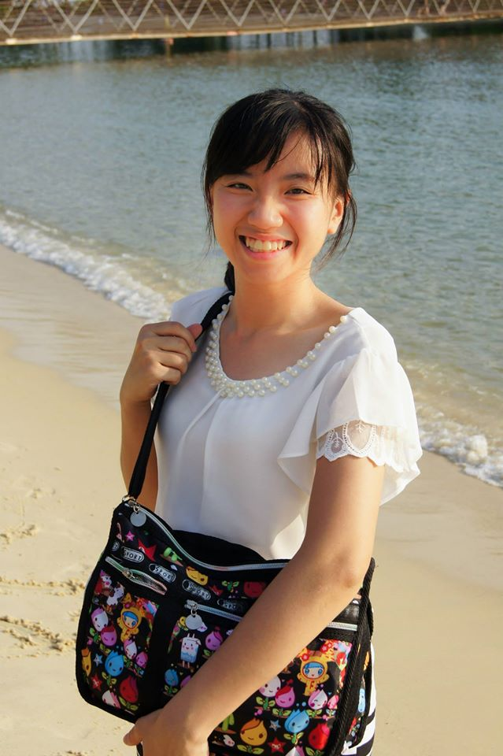

“NINA” YUAN-I CHEN
Email: ttyya12345@hotmail.com

EDUCATION
- M. S. Degree in Biomedical Engineering (GPA 4.27/4.3,Rank 1/46)
National Taiwan University, Taipei, Taiwan, 2012-2014
- B. S. Degree in Biomedical Imaging & Radiology Science (GPA: 3.86/4.3, Last 2 yrs: 4.05/4.3, Rank 4/54)
National Yang-Ming University, Taipei, Taiwan, 2008-2012
RESEARCH & WORK EXPERIENCE
Research Assistant, Institute of Biomedical Sciences, Academia Sinica, Taipei, Taiwan,Oct. 2015-Present
- Developing a multi-functional, biomimetic nanoparticle for immune activation.
- Developing a novel hydrogel with micro/nano technology for treating infectious disease.
- Developing a multi-functional, biomimetic nanoparticle for the application of magnetic resonance imaging (MRI).
Research Assistant, Dept. of Oncology, National Taiwan Univ. Hospital, Taipei, Taiwan, Oct.‘14-Aug.‘15
- Conducted a Taiwan National Science Council-sponsored research project: Novel photo-thermal controlled drug-releasing vectors for cancer detection and treatment.
- Developed a novel drug delivery system and submitted the work, “The Novel Temporal Controlled Micelle for Enhancing Combination Therapy,” to the International Journal of nanomedicine.
- Led junior students to conduct experiments on theranostics nanoparticles.
- Completed the project “CD133-targeted SN38 mPEG-PCL/mal-PEG-PCL micelles for human colorectal cancer stem cell therapy” and submitted the work for publication.
- Applied for a patent on a novel drug carrier and its manufacturing method.
Research Assistant, Inst. of Biomedical Engineering, National Taiwan Univ., Taipei, Taiwan, Aug.’12-Aug.‘14
- Conducted a Taiwan Ministry of Health and Welfare-sponsored research project: Targeted nano-carriers for early diagnosis and treatment of colorectal cancer.
- Designed and developed a novel multi-functional drug carrier and authored the paper “Traceable Self-Assembly of Laser-Triggered Cyanine-Based Micelle for Synergistic Therapeutic Effect” in Advanced Healthcare Materials.
- Set up animal cancer models for real-time diagnosis and photothermal therapy.
Clinical Internship, Department of Radiology & Department of Nuclear Medicine, Taipei Veterans General Hospital, Taipei, Taiwan, Sept. ’11-June ‘12
- Department of Radiology: collaborated with physicians in diagnostic radiology (CT, X-ray, and mammography), ultrasound (US), magnetic resonance imaging (MRI), interventional radiology, neuroradiology.
- Department of Nuclear Medicine: collaborated with physicians in the diagnosis and treatment of cancer (SPECT, PET, PET-CT), radiopharmaceutical laboratory, and clinical immunoassay laboratory.
Research Internship, Department of Radiation Oncology, City of Hope National Medical Center, Los Angeles, California, USA, June. ’11- Aug ‘11
- Studied the cellular growth of cells deficient in R gene after exposure to ionizing radiation (IR) using mouse embryonic fibroblast cells (MEFs) divided from embryo.
- Designed and simulated (CTSim) dosimetry for a radiation treatment plan.
- Conducted a radiation treatment plan utilizing x-knife, photon knife, gamma knife radio surgery and proton-knife.
Research Internship, Dept. of Physiology, National Yang-Ming University, Taipei, Taiwan, July ‘10- June ‘11
- Performed western blotting, flow cytometry analysis, RT-PCR, and immunofluorescence staining.
Research Internship, Biomedical Imaging and Radiology Science, National Yang-Ming University, Taipei, Taiwan, July & Aug. 2009
- Performed organic synthesis distillation, liquid-liquid extraction, thin layer chromatography, column chromatography.
PUBLICATIONS
- Yuan-I Chen, Cheng-Liang Peng, Pei-Chi Lee, Ming-Hsien Tsai, Chun-Yen Lin, Ying-Hsia Shih, Min-Feng Wei, Tsai-Yueh Luo and Ming-Jium Shieh “Traceable self-assembly of laser-triggered cyanine-based micelle for synergistic therapeutic effect.” Adv Healthc Mater. 2015 Apr;4(6):892-902
- Cheng-Liang Peng, Yuan-I Chen, Hung-Jen Liu, Pei-Chi Lee, Tsai-Yueh Luo, and Ming-Jium Shieh “The Novel Temporal Controlled Micelle for Enhancing Combination Therapy” International Journal of nanomedicine. (Submitted)
CONFERENCES
Master of Ceremonies, Annual Meeting of Taiwanese Society for Molecular Imaging, National Yang-Ming University, Taipei, Taiwan, 2009
ACADEMIC HONORS AND AWARDS
- Candidate of Graduate Student Paper Award, National Taiwan University College of Medicine, 2015
- Academic Excellence Award, National Taiwan University (Awarded to the top 5% of class each semester), 03/2013, 10/2013, 10/2014
- Academic Excellence Award, National Yang-Ming University (Awarded to the top 5% of class each semester), 03/2012, 10/2012
- Taipei Wunchang Temple Scholarship, 2012
- Han Wei founding Dean Memorial Scholarship (Public-spirited award), 2010
- 1st prize, Toastmasters International, Division of National Yang-Ming University (Humorous Speech Contest), 2010
RESEARCH INTEREST
My passion is on nanobioscience and developing drug delivery systems for efficient diagnosis and treatment. In particular, I specialize in applying biomimicry techniques and radiotherapeutic instruments to develop novel systems for clinical purposes.
EXTRACURRICULAR ACTIVITIES
- Certification for Licensed Radiologist (Diagnostic Radiology, Nuclear Medicine, Radiation Therapy), 2012
- Vice President, Biomedical Imaging and Radiology Science Student Council, National Yang-Ming University, 2010-2011
- President, Toastmasters International, Division of National Yang-Ming University, 2009-2010
- Vice President, Student Counseling Center, National Yang-Ming University, 2009-2010
- Volunteer, taught in a rural remote elementary school, summer / winter vacation, 2008-2011
- New Balance Long-distance Running Event-13 km, 2012 Hello everyone.